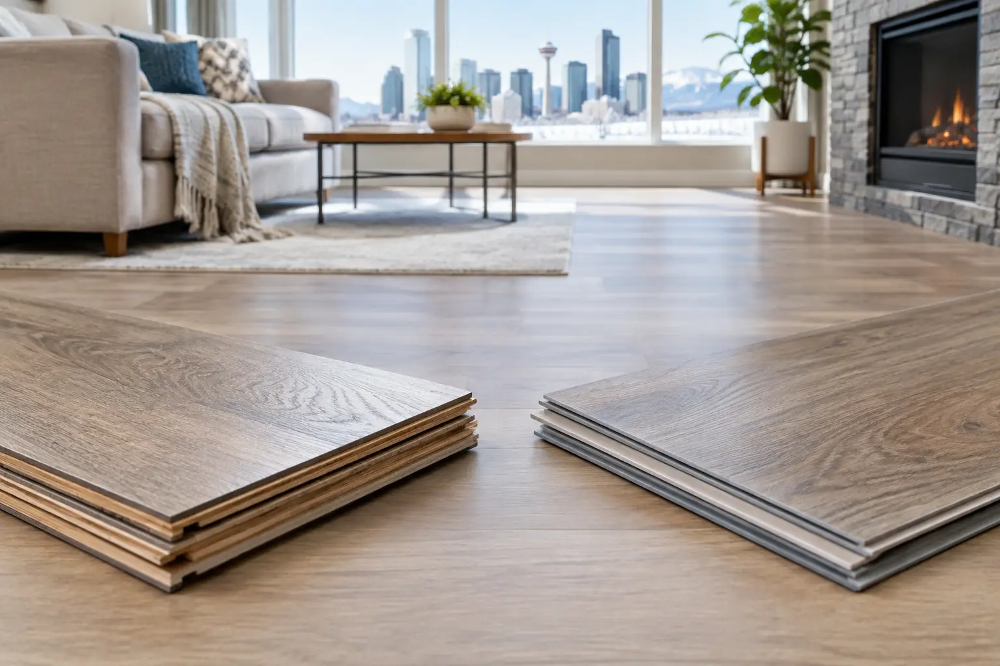

Laminate vs Vinyl Flooring for Calgary Homes
By Vitalii Nestorenko · October 8, 2026 · 6 min read
A flooring choice can look great in a showroom and become a daily frustration once wet boots, a leaking dishwasher, kids, pets, and Calgary’s dry winter air arrive. When comparing laminate vs vinyl flooring, the best option is not simply the one with the lowest price or the most convincing wood look. It is the one that suits the room, the subfloor, and how your household actually lives.
Both materials are practical alternatives to hardwood, and both come in convincing plank and tile styles. Their performance around water, temperature changes, dents, repairs, and installation is different enough that choosing carefully can save you from replacing a floor sooner than expected.
Laminate vs Vinyl Flooring: The Main Difference
Laminate flooring is generally made from a high-density fibreboard core, topped with a photographic design layer and a tough wear layer. It is installed as a floating floor, meaning the planks lock together and sit over an underlay rather than being permanently fastened to the subfloor.
Vinyl flooring is synthetic and comes in several forms, including luxury vinyl plank (LVP), luxury vinyl tile (LVT), sheet vinyl, and rigid-core products such as SPC. Many vinyl planks also click together, while others are glued down. Because its core and surface are made to resist moisture, vinyl is usually the safer material where water is a regular part of life.
That core construction drives most of the decision. Laminate can deliver a crisp, wood-like appearance and a firm feel underfoot, but its fibreboard core can swell when moisture gets into seams or edges. Vinyl does not absorb water the same way, although water can still find its way underneath a poorly installed floor.
Water Resistance: Where Vinyl Usually Wins
For bathrooms, laundry rooms, basement entries, and kitchens used by busy families, vinyl is often the more forgiving choice. Spills can be wiped up without the same concern that moisture will swell the plank core. Quality vinyl is marketed as waterproof, but that does not mean the room itself is protected from a plumbing leak. Water trapped below any floating floor can still cause odours, mould concerns, or damage to the subfloor.
Laminate has improved substantially. Some modern products offer water-resistant joints and extended spill protection. That can work well in a dining room, living room, hallway, or carefully managed kitchen. It is still not the first choice for a full bathroom or any room where standing water is likely.
A common mistake is assuming that water resistance and waterproofing mean the same thing. They do not. Water-resistant laminate buys you time to clean up a spill. Waterproof vinyl is better equipped for routine moisture exposure, but proper caulking, perimeter gaps, transitions, and leak repairs still matter.
Appearance and Feel Underfoot
If the goal is a traditional wood-floor look, laminate often has an edge in visual depth and surface texture. Higher-quality laminate can have realistic grain patterns and embossed finishes that feel closer to finished wood. It is a strong fit for a main-floor living area where appearance matters and moisture is limited.
Vinyl has also come a long way. Better LVP and LVT products now offer matte finishes, wide planks, bevelled edges, and natural-looking texture. The selection is broad enough to suit modern condos, rental suites, family homes, and renovation projects where matching an existing style matters.
Underfoot, vinyl is typically quieter and slightly warmer than laminate, especially with the right underlayment or a built-in backing. Laminate can feel firmer and can produce more hollow sound if it is installed over an uneven subfloor or without the proper underlay. Neither material feels exactly like solid hardwood, but both can be comfortable when the installation is done properly.
Durability Depends on the Room and Product
Laminate’s wear layer is highly resistant to everyday scratching, making it a solid contender for living rooms, bedrooms, and hallways. Dog claws, dining chairs, and regular foot traffic are less of a concern with a good-quality product. Its weak point is moisture damage. Once a laminate plank swells, it usually needs replacement rather than repair.
Vinyl resists moisture well and has enough flexibility to handle active homes, but it is not indestructible. Heavy appliances, sharp furniture legs, and dropped tools can dent or gouge certain vinyl products. Thicker rigid-core vinyl tends to hide minor subfloor imperfections better than thinner material, but it may still telegraph major dips, ridges, or uneven spots.
For rental properties, vinyl is often practical because it is easy to clean, handles wet shoes well, and offers a good balance of durability and replacement cost. For a dry upper-floor bedroom or living room where a more wood-like finish is the priority, laminate can be an excellent value.
Calgary Climate and Subfloor Preparation Matter
Calgary homes deal with significant seasonal changes. Indoor humidity drops in winter, and basements can have colder concrete slabs. Those conditions make preparation more important than many homeowners expect.
A floating laminate or vinyl floor needs a clean, dry, level base. “Level” does not mean perfectly flat to the eye. It means there are no significant high points, low areas, loose sections, or uneven seams that will stress the locking joints. Skipping this step can lead to clicking noises, separating planks, cracked joints, or a floor that feels soft in spots.
Concrete basement floors need special attention. Moisture testing and the correct vapour barrier or underlayment may be necessary before installation. A previous flood, an active crack, or a damp area near an exterior wall should be addressed before new flooring goes down. Flooring can cover a problem for a while, but it cannot fix the source of moisture.
Both laminate and vinyl also need room to expand and contract around walls, door frames, and fixed objects. That expansion gap is hidden by baseboards or shoe moulding. Filling every edge tightly with flooring can cause buckling later.
Installation: DIY-Friendly Does Not Mean Risk-Free
Click-lock planks make both materials approachable for capable DIYers. The difficult part is rarely clicking the middle rows together. The detail work takes time: removing and reinstalling baseboards, undercutting door jambs, trimming around vents, planning the first row, keeping joints staggered, and fitting clean transitions at doorways.
Vinyl can be easier to cut than laminate, while laminate’s rigid boards can make long, straight rooms move quickly once the layout is established. Glue-down vinyl has its own demands. The subfloor must be very smooth, clean, and properly prepared, or imperfections can show through the finished surface.
Before buying materials, measure the room carefully and account for waste from cuts, pattern matching, closets, and awkward corners. It is also worth checking the manufacturer’s rules for underlayment, temperature, subfloor moisture, and warranty requirements. Using the wrong underlay or installing over an unsuitable surface can void coverage.
Cost: Look Beyond the Price Per Square Foot
Entry-level laminate and vinyl can have similar material prices, while premium versions of either can cost much more. The real project cost includes underlayment, vapour protection where needed, transitions, baseboard work, floor levelling, disposal of old flooring, and installation labour.
Vinyl may cost more upfront in some product lines, but it can be money well spent in a moisture-prone room. Laminate can offer a polished look for less in dry spaces. The lowest-priced option is not always the economical one if it needs early replacement because it was used in the wrong location.
Which Flooring Should You Choose?
Choose laminate when you want a convincing wood appearance, strong scratch resistance, and a budget-conscious finish for dry areas such as bedrooms, living rooms, and hallways. It is particularly appealing when water exposure is occasional and spills will be cleaned promptly.
Choose vinyl when the room faces regular moisture, muddy footwear, pets, children, or basement conditions. It is usually the more practical option for kitchens, bathrooms, laundry rooms, entrances, and rental units where easy cleaning and water resistance matter most.
If you are renovating multiple rooms, you do not have to use one material everywhere. A laminate living area paired with vinyl in the entry, kitchen, and bathroom can give each space the performance it needs while keeping the overall design consistent.
The best floor is the one installed on a properly prepared surface and matched to the way your home is used. If you are unsure what is under the old flooring, whether your subfloor needs repair, or which product suits a specific room, getting the site checked before ordering materials can prevent a costly do-over. Nestor’s Home Help can help Calgary-area homeowners with practical flooring repairs, preparation, and installation work so the finished floor looks clean and stays put.
Vitalii Nestorenko is the owner of Nestor's Home Help, a licensed and insured handyman business in Calgary. He holds a Master's degree in mechanical engineering and does every job himself.